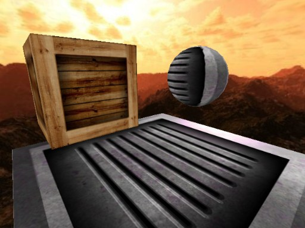

CopperLicht API Documentation
All tutorials
CopperLicht Tutorial: Movement and Keyboard input
This tutorial shows how move 3d objects in your 3d scene using the keyboard and how to use Animators.
The final result of this tutorial will look about like this:

A cube which can be moved using the keys 'F' and 'G', and a rotating sphere.
A cube which can be moved using the keys 'F' and 'G', and a rotating sphere.
- Show live demo of this tutorial
- Download this tutorial as zip archive.
Things you'll need
If you haven't read the first tutorial yet, you should do so now. It shows how to create a basic 3d scene.Creating your 3d scene
For this tutorial, we need a very simple 3d scene. As in the first tutorial, we created it in the editor CopperCube.Start up CopperCube and place a cube, a sphere and a plane in the 3d view. Ensure that the name of the Cube is 'cubeMesh1' and the name of your sphere is 'sphereMesh1'.
Your scene should look like this afterwards:
The 3d scene needed for this tutorial, created using CopperCube
Writing CopperLicht code
As in the first tutorial, to be able to load and show this 3d scene in CopperLicht, we need to export it to an .ccbjs or .ccbz file. Save you Coppercube document to a directory of your choice and publish the scene as WebGL: Choose Tools -> Test as JavaScript/WebGL. Open the created .html file using your text editor, it will look like this:
<html>
<head>
<meta http-equiv="Content-Type" content="text/html; charset=iso-8859-1">
<script type="text/javascript" src="copperlichtdata/copperlicht.js"></script>
</head>
<body>
<div align="center">
<canvas id="3darea" width="640" height="480" style="background-color:#000000">
</canvas>
</div>
<script type="text/javascript">
<!--
startCopperLichtFromFile('3darea', 'copperlichtdata/tutorial-2.ccbjs');
-->
</script>
</body>
</html>
We will now replace the code section (the part with the startCopperLichtFromFile call) with our own code. Simply
replace the whole javaScript section with the following:
<script type="text/javascript">
<!--
var engine = startCopperLichtFromFile('3darea', 'copperlichtdata/tutorial-2.ccbjs');
var cubeSceneNode = null;
// this is called when loading the 3d scene has finished
engine.OnLoadingComplete = function()
{
var scene = engine.getScene();
if (scene)
{
// find the cube scene node
cubeSceneNode = scene.getSceneNodeFromName('cubeMesh1');
// also, force the 3d engine to update the scene every frame
scene.setRedrawMode(CL3D.Scene.REDRAW_EVERY_FRAME);
// additional, let the sphere constantly rotate
var sphereSceneNode = scene.getSceneNodeFromName('sphereMesh1');
if (sphereSceneNode)
sphereSceneNode.addAnimator(new CL3D.AnimatorRotation(new CL3D.Vect3d(0, 1.6, 0.8)));
}
}
document.onkeydown = function(event)
{
var key = String.fromCharCode(event.keyCode);
// when pressed 'F', move the cube scene node a bit up
if (key == 'F' && cubeSceneNode)
cubeSceneNode.Pos.Y += 5;
// when pressed 'G', move the cube scene node a bit down
if (key == 'G' && cubeSceneNode)
cubeSceneNode.Pos.Y -= 5;
// we need to call the key handler of the 3d engine as well, so that the user is
// able to move the camera using the keys
engine.handleKeyDown(event);
};
-->
</script>
Now when you start up the html file, you will see the sphere rotating, and be able to move the cube when pressing
the keys F and G. I'll explain here a bit in detail how the code works.
How the code works
Using the linevar engine = startCopperLichtFromFile('3darea', 'copperlichtdata/tutorial-2.ccbjs');
we store an instance of the CopperLicht class in the variable 'engine' and tell
CopperLicht to load the file 'copperlichtdata/tutorial-2.ccbjs'. CopperLicht will use the <canvas> element in
this html document with the id '3darea' as specified in the first parameter.Using this 'engine' object, we can manipulate the whole 3d scene. To get notified when CopperLicht has finished loading the 3d scene from the file, we register the event in this line:
// this is called when loading the 3d scene has finished
engine.OnLoadingComplete = function()
{
In that function, we search the Scene for the scene nodes with the names 'cubeMesh1' (and later also 'sphereMesh1'):
var scene = engine.getScene();
if (scene)
{
// find the cube scene node
cubeSceneNode = scene.getSceneNodeFromName('cubeMesh1');
These names should have set in the editor for these scene nodes. The cubeMesh is stored in the var 'cubemesh' so we can change its position later when the keys are pressed.We also change the redraw mode of the scene using
// also, force the 3d engine to update the scene every frame scene.setRedrawMode(Scene.REDRAW_EVERY_FRAME);In this way, we do not need to call CL3D.Scene.forceRedrawNextFrame() all the time once we made a small change the 3d scene. You can set this setting also in the CopperCube editor, in the publishing settings.
To make the sphere constantly rotate, we use a feature of CopperLicht called Animators. Animators are classes which manipulate scene nodes in a simple way. There are animators which are able to move scene nodes along a path, to animate their textures or to rotate them. In this case we create a new AnimatorRotation, set a rotation speed of (0, 1.6, 0.8) and add it to the sphere, causing it to constantly rotate:
// additional, let the sphere constantly rotate
var sphereSceneNode = scene.getSceneNodeFromName('sphereMesh1');
if (sphereSceneNode)
sphereSceneNode.addAnimator(new AnimatorRotation(new Vect3d(0, 1.6, 0.8)));
The Keyboard input part
The last part in this tutorial makes the cube move up and down when the user presses the keys 'F' and 'G'. For this, a function is created to receive keyboard input:document.onkeydown = function(event)
{
Note that when an instance of the CopperLicht engine is created, it will register the keyboard handler for itself. By registering our own keyboard handler,
we remove the keyboard input from the CopperLicht engine. That's why we forward keyboard input to CopperLicht in the last line of this function:
// we need to call the key handler of the 3d engine as well, so that the user is // able to move the camera using the keys engine.handleKeyDown(event);But before this, we move the Cube when the keys are pressed:
var key = String.fromCharCode(event.keyCode);
// when pressed 'F', move the cube scene node a bit up
if (key == 'F' && cubeSceneNode)
cubeSceneNode.Pos.Y += 5;
// when pressed 'G', move the cube scene node a bit down
if (key == 'G' && cubeSceneNode)
cubeSceneNode.Pos.Y -= 5;
This simply changes the position of the cubeSceneNode up or down. Note that if we hadn't changed the redraw mode to 'every frame' before
using scene.setRedrawMode(CL3D.Scene.REDRAW_EVERY_FRAME);, we would have needed to call Scene.forceRedrawNextFrame() after this change, so
that CopperLicht knows we want to redraw the frame because we manually changed the position of the cube.Instead of changing the position using .Pos, you could also try out changing the rotation using .Rot or the scale of the scene node, using .Scale.
That's it, now you know how to manipulate scene nodes basically.
More Tutorials
© 2011-2018 N.Gebhardt, Ambiera
Documentation generated by JsDoc Toolkit
Documentation generated by JsDoc Toolkit